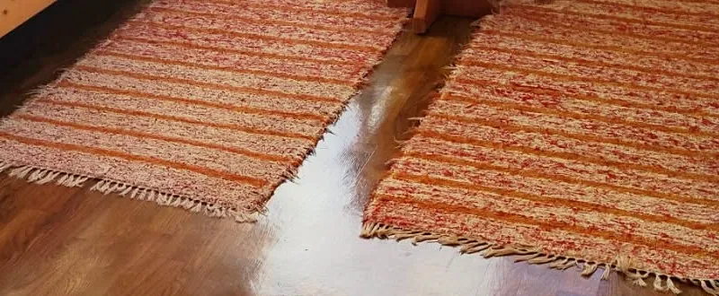
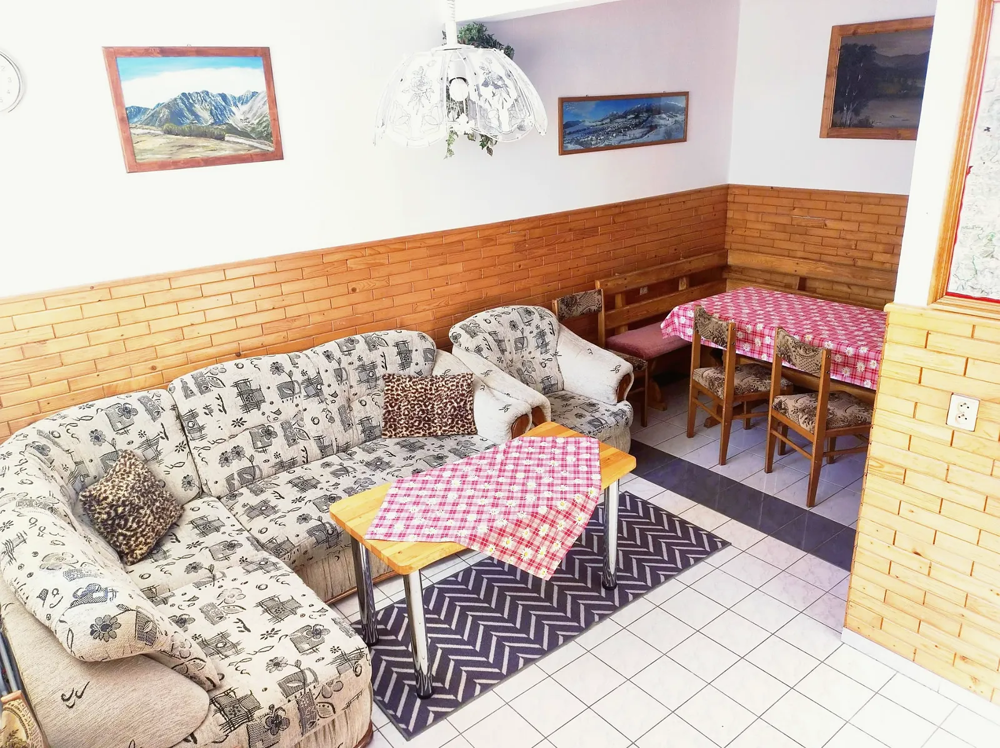
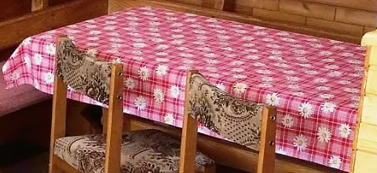
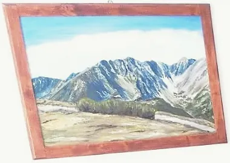

Radová 330, Zuberec
Privát Glončák ubytovanie v súkromí pod Roháčmi
Samostatná prístavba nášho rodinného domu s vlastným vchodom. Štyri izby, spoločná obývačka s kuchyňou, altánok s kotlíkom a k vleku je to päťsto metrov.
- až 14 hostí v štyroch izbách
- od 14 € za osobu a noc
- hostia nás na Hauzi.sk hodnotia 4,9 z 5


Štyri izby, až štrnásť miest na spanie
Každá izba má dve samostatné drevené postele a stolík. Keď vás príde viac, pridáme prístelku – rozkladacie kreslo alebo pohovku. Zmestí sa k nám celá partia aj dve rodiny naraz.
- Izby
- 4 dvojlôžkové
- Pevné postele
- 8
- Prístelky
- 6
- Vchod
- samostatný





Obývačka pre celú partiu
Na prízemí je spoločenská miestnosť s televízorom, sedačkou a veľkým stolom. Hneď vedľa je kuchyňa s chladničkou, mikrovlnkou, rýchlovarnou kanvicou, plynovým sporákom a dvojplatničkou.
Varíte si sami. Keď sa nechce, najbližšia reštaurácia je 450 metrov od domu.

Dve kúpeľne a dvor s altánkom
Kúpeľne sú dve a spoločné pre celú prístavbu. V každej je sprcha, umývadlo a WC, uteráky dostanete od nás.
Pred domom je altánok s grilom a kotlíkom, posedenie a trampolína pre deti. Autá zaparkujete priamo pri dome, lyže a bicykle odložíte v lyžiarni.


Úprimne: čo u nás je a čo nie
Nájdete
- samostatný vchod do prístavby
- WiFi zdarma
- štyri parkovacie miesta pri dome
- lyžiareň a úschovňu bicyklov
- altánok s grilom a kotlíkom
- trampolínu pre deti
Nenájdete
- kúpeľňu na izbe, sú dve spoločné
- wellness ani bazén
- umývačku riadu
- raňajky, varíte si sami
- miesto pre psa, zvieratá nie sú povolené
Zuberec, brána do Roháčov
Zuberec leží na Orave priamo pod Západnými Tatrami. Na túru vyrazíte rovno od dverí, v zime sa lyžuje na Janovkách alebo v Spálenej doline. Keď sa počasie pokazí, sú blízko Oravský hrad, Oravská priehrada aj Meander Park v Oraviciach.
| Potraviny | 400 m |
|---|---|
| Reštaurácia | 450 m |
| Zjazdovka | 500 m |
| Autobusová zastávka | 650 m |
| Vlaková stanica | 12 km |
| Tvrdošín | 20 km |
| Oravský Podzámok | 30 km |
| Námestovo | 35 km |

Kniha hostí
Vyberte si termín a pošlite nám dopyt. Odpíšeme e-mailom, potvrdíme termín a pošleme pokyny k zálohe.
voľné obsadené